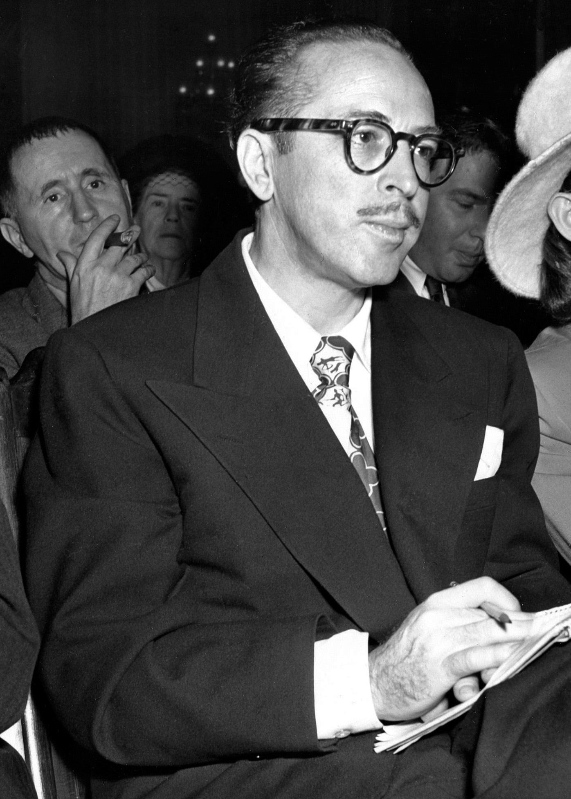

Name ______________________Date ______________Period __________
The Investigation File: The Red Scare at Home
Directions: Your group has the investigation file. Each station holds one document from the Second Red Scare. For every document, separate the claim made from the evidence shown in the document itself. Work through the five stations in order, then deliver the closing verdict in Part 2.
Part 1: Five Stations
Station 1: The Wheeling Speech, February 9, 1950
Source: Joseph R. McCarthy, Wheeling Speech on Communists in the State Department, February 9, 1950, as printed in the Congressional Record, February 20, 1950. Audited TPSP bank record, mccarthy-wheeling-speech-1950. Cuts are marked with ellipses in brackets. The bank record preserves no separate transcript of the speech as delivered at Wheeling. Its text is the version McCarthy read into the Congressional Record on the Senate floor eleven days later, and its headnote records that reporters at Wheeling heard a claim of 205 names where the Record text below says 57 cases.
About 10 days ago, at Wheeling, W. Va., in making a Lincoln Day speech, I made the statement that there are presently in the State Department a very sizable group of active Communists. [...]
The reason why we find ourselves in a position of impotency is not because our only powerful potential enemy has sent men to invade our shores, but rather because of the traitorous actions of those who have been treated so well by this Nation. It has not been the less fortunate or members of minority groups who have been selling this Nation out, but rather those who have had all the benefits that the wealthiest nation on earth has had to offer, the finest homes, the finest college education, and the finest jobs in Government we can give. This is glaringly true in the State Department. [...]
In my opinion the State Department, which is one of the most important government departments, is thoroughly infested with Communists. I have in my hand 57 cases of individuals who would appear to be either card carrying members or certainly loyal to the Communist Party, but who nevertheless are still helping to shape our foreign policy.
State the claim McCarthy makes in your own words. What exactly does he say is happening inside the State Department?
State the evidence the document itself shows for that claim. What does holding the cases in his hand prove, and what does it leave unproven?
Station 2: HUAC Questions a Witness, October 1947
Source: Hearings Regarding the Communist Infiltration of the Motion Picture Industry, House Un-American Activities Committee, October 1947. The short exchange below is quoted from the hearing transcript. The paragraph after it is a labeled summary of the record.
The Chairman: Are you or have you ever been a member of the Communist Party?
Mr. Trumbo: I believe I have the right to be confronted with any evidence which supports this question. I should like to see what you have.
The Chairman (pounding gavel): The witness is excused.
Dalton Trumbo, a screenwriter, was one of ten witnesses who refused to answer the committee's questions about their beliefs and associations, arguing that the First Amendment protected them. On November 24, 1947, the House of Representatives confirmed contempt of Congress citations against all ten. Courts upheld the citations after appeal, and the ten served prison terms beginning in 1950.

Dalton Trumbo at the House Un-American Activities Committee hearings, 1947. Unknown photographer, public domain, via Wikimedia Commons.
State the claim each side makes in this exchange. What does the committee claim the right to do, and what does Trumbo claim the right to demand?
State the evidence each side shows in the document. What happens to Trumbo in the record, and what does that outcome prove and leave unproven?
Station 3: The Loyalty Order and the Oath, 1947
Source: Executive Order 9835, March 21, 1947, text as held by the Harry S. Truman Library, and the federal oath of office, 5 U.S.C. 3331. Cuts are marked with ellipses.
From the order: it is of vital importance that persons employed in the Federal service be of complete and unswerving loyalty to the United States. [...] There shall be a loyalty investigation of every person entering the civilian employment of any department or agency of the executive branch of the Federal Government. [...] Membership in, affiliation with or sympathetic association with any foreign or domestic organization [...] designated by the Attorney General as totalitarian, fascist, communist, or subversive [...] may be considered in connection with the determination of disloyalty.
From the oath every federal employee swore: I will support and defend the Constitution of the United States against all enemies, foreign and domestic [...] and that I will well and faithfully discharge the duties of the office on which I am about to enter.
State the claim the order makes about federal employees. What danger does it name, and what protection does it set out to provide?
State the evidence test the order sets. Under its words, what besides spying itself could count as evidence of disloyalty?
Station 4: The Rosenberg Case, 1951 to 1953
Source: Station file prepared for this lesson from the trial record in United States v. Rosenberg, Southern District of New York, 1951. It is a labeled summary of the record, not a single document.
Julius Rosenberg, an engineer, and his wife Ethel were tried in March 1951 on a charge of conspiracy to commit espionage for the Soviet Union. The central prosecution witness was David Greenglass, Ethel's brother, who had worked as a machinist on the atomic bomb project at Los Alamos. Greenglass testified that he had passed descriptions and sketches of the bomb project to Julius through a courier, Harry Gold, and that Ethel had typed notes for the work. The defense answered that Greenglass had shifted blame to protect himself and his wife after his own arrest. The jury convicted both Rosenbergs. Judge Irving Kaufman sentenced them to death, and after appeals and requests for clemency failed, both were executed at Sing Sing prison on June 19, 1953.
State the claim the prosecution made, in one sentence, and name the witness the claim rested on most heavily.
Separate the evidence shown from the questions left open. What did the jury decide, and what in this summary would a careful reader still want to check?
Station 5: The Army-McCarthy Hearings, June 9, 1954
Source: Army-McCarthy hearings transcript, Senate Permanent Subcommittee on Investigations, June 9, 1954. Joseph N. Welch was the Army's lawyer. Fred Fisher was a young lawyer in Welch's firm whom McCarthy had just named in the hearing for past membership in the National Lawyers Guild. A cut is marked with an ellipsis.
Until this moment, Senator, I think I have never really gauged your cruelty or your recklessness. Fred Fisher is a young man who went to the Harvard Law School and came into my firm and is starting what looks to be a brilliant career with us. [...] Let us not assassinate this lad further, Senator. You've done enough. Have you no sense of decency, sir? At long last, have you left no sense of decency?
The hearings ran for 36 days on television. That December the Senate voted 67 to 22 to condemn McCarthy's conduct.
Joseph Welch, left, with Senator Joseph McCarthy at the Army-McCarthy hearings, June 9, 1954. United States Senate photograph, via Wikimedia Commons.
State the claim Welch makes about McCarthy's method. What act in the hearing room is his evidence for it?
State what this document does not settle. Welch wins the room, but what question about the charges of the previous four years remains open at the end of the exchange?
Part 2: The Closing Verdict
Your group has separated claims from evidence in five documents. Now rank the file and defend the ranking in writing.
Most defensible use of a claim in the file (station number and document): ____________________________
Least defensible use of a claim in the file (station number and document): ____________________________
In a short paragraph, deliver your verdict. Name the document your group judges shows the scare at its most defensible and the document that shows it at its least defensible. For each judgment, quote or name the evidence the document itself shows, including one place where a claim in the file runs ahead of its evidence.
Teacher Answer Key
Station 1: The Wheeling Speech
State the claim. McCarthy claims that a very sizable group of active Communists works inside the State Department, that its members are privileged Americans who are betraying the nation, and that he holds 57 cases of individuals who appear to be party members or loyal to the party while still shaping foreign policy.
State the evidence shown. The document shows the physical claim itself, cases held in his hand, and the speaker's opinion, stated in his own words. It shows no names examined in the document, no documents from the cases, and no findings. Holding papers proves that a claim was made in a dramatic form. It leaves the membership, the loyalty, and the policy influence of the 57 unproven, and the bank record's headnote adds that reporters at Wheeling heard 205 names where the Record text says 57 cases.
Station 2: HUAC Questions a Witness
State the claim each side makes. The committee claims the right to ask a witness directly whether he is or has ever been a member of the Communist Party, and to end the testimony when he will not answer in its terms. Trumbo claims the right to be confronted with the evidence behind the question and to see what the committee holds before answering.
State the evidence and the outcome. The transcript shows the question, the demand for evidence, and the gavel ending the exchange. The labeled summary records the consequence: contempt citations confirmed by the House on November 24, 1947, upheld by the courts, and prison terms from 1950. The outcome proves the committee could enforce its question with Congress's contempt power. It leaves unproven the thing the question implied, since refusal to answer is not itself evidence of the membership the committee suspected.
Station 3: The Loyalty Order and the Oath
State the claim. The order claims that federal employees hold a trusteeship over democratic processes, that complete and unswerving loyalty is of vital importance, and that the government must protect itself against infiltration by disloyal persons while also protecting loyal employees from unfounded accusations.
State the evidence test. The order requires an investigation of every person entering federal civilian employment, and it lets membership in, affiliation with, or sympathetic association with an organization the Attorney General designates as subversive count in a disloyalty determination. Association and sympathy therefore stand beside espionage, sabotage, and treason as material a board may weigh, which is a wider test than proof of a disloyal act.
Station 4: The Rosenberg Case
State the claim and the witness. The prosecution claimed that Julius and Ethel Rosenberg conspired to pass atomic bomb secrets to the Soviet Union. The claim rested most heavily on David Greenglass, Ethel's brother, who testified that he passed descriptions and sketches through the courier Harry Gold and that Ethel typed notes.
Separate the evidence from the open questions. The jury convicted both defendants, Judge Kaufman imposed death sentences, and both were executed on June 19, 1953, after appeals and clemency requests failed. A careful reader still checks the summary's own cautions: the key witness was an admitted participant testifying after his own arrest, the defense argued he had shifted blame to protect himself and his wife, and the case against Ethel rested on narrower testimony than the case against Julius. The verdict settles the legal outcome. It does not by itself close the argument over the weight of the evidence or the sentence.
Station 5: The Army-McCarthy Hearings
State the claim and its evidence. Welch claims that McCarthy's conduct in the hearings is cruel and reckless. His evidence is the act the room has just watched: McCarthy naming Fred Fisher, a young lawyer who was not a witness, for a past association, before a national television audience, after Fisher had already been withdrawn from the Army's team.
State what the document does not settle. The exchange discredits a method, and the Senate's 67 to 22 vote that December condemned McCarthy's conduct. Neither the exchange nor the vote answers the underlying security questions raised since 1947, which cases involved real espionage, what the loyalty program had found, or where lawful investigation should have stopped. Students should keep the conduct verdict and the evidence questions separate, as the Senate itself did.
Part 2: The Closing Verdict (Grading Rubric)
Full credit answers will differ in their ranking. The strongest verdicts usually place Station 4 or Station 3 at the most defensible end, because each shows a stated charge tested in a court or a written standard applied on its face, and Station 1 at the least defensible end, because its claim is the largest in the file and its shown evidence is the thinnest. Accept a different ranking when the evidence reasoning carries it.
Full credit for the paragraph should be awarded if the student:
Names one most defensible and one least defensible document and keeps the paragraph on that comparison.
For each judgment, names the evidence the document itself shows, rather than retelling the lesson narrative.
Identifies at least one place where a claim runs ahead of its evidence, such as the changing Wheeling numbers, association counted as disloyalty material, or refusal to answer treated as proof of membership.
Connects the verdict to the lesson question: how the fear changed American life, and what the claim and evidence gap had to do with the change.